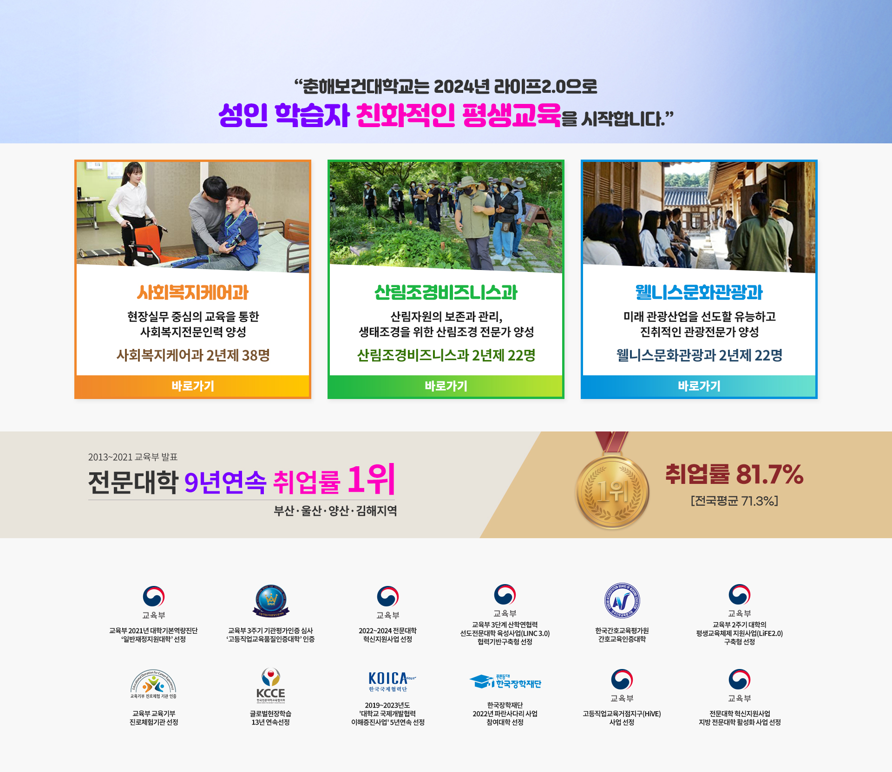

"춘해보건대학교는 2024년 라이프2.0으로 성인 학습자 친화적인 평생교육을 시작합니다."
사회복지케어과, 현장실무 중심의 교육을 통한 사회복지전문인력 양성, 사회복지케어과 2년제 38명, 바로가기
산림조경비즈니스과, 산림자원의 보존과 관리, 생태조경을 위한 산림조경 전문가 양성, 산림조경비즈니스과 2년제 22명, 바로가기
웰니스문화관광과, 미래 관광산업을 선도할 유능하고 진취적인 관광전문가 양성, 웰니스문화관광과 2년제 22명, 바로가기
2013~2021 교육부 발표, 전문대학 9년연속 취업률 1위, 부산·울산·양산·김해지역, 1위, 취업률 81.7%, [전국평균 71.3%]
-
교육부 : 교육부 2021년 대학기본역량진단 '일반재정지원대학' 선정
-
고등직업교육품질인증대학 : 교육부 3주기 기관평가인증심사 '고등직업교육품질인증대학' 인증
-
교육부 : 2022~2024 전문대학 혁신지원사업 선정
-
교육부 : 교육부 3단계 산학연협력 선도전문대학 육성사업(LINC 3.0) 협력기반구축형 선정
-
한국간호교육평가원 : 한국간호교육평가원 간호교육인증대학
-
교육부 : 교육부 2주기 대학의 평생교육체제 지원사업(LiFE2.0) 구축형 선정
-
교육기부 진로체험 기관인증 : 교육기부 진로체험기관 인증 교육부 교육기부 진로체험기관 선정
-
KCCE 한국전문대학교육협의회 : 글로벌현장학습 13년 연속선정
-
KOICA 한국국제협력단 : 2019~2023년도 '대학교 국제개발협력 이해증진사업' 5년연속 선정
-
푸른등대 한국장학재단 : 한국장학재단 2022년 파란사다리 사업 참여대학 선정
-
교육부 : 고등직업교육거점지구(HiVE) 사업 선정
-
교육부 : 전문대학 혁신지원사업 지방 전문대학 활성화 사업 선정